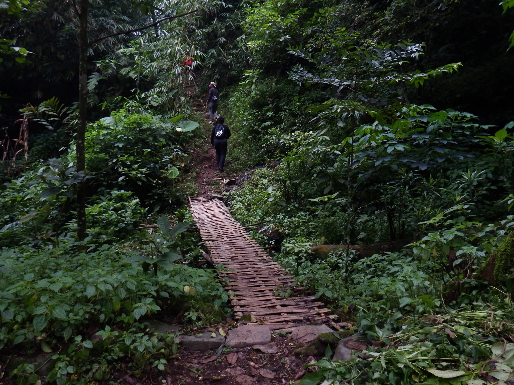

Lebih dekat ke alam.
Lebih dalam
menemukan makna.
Telusuri kehidupan hutan, temui cerita masyarakat, dan bawa pulang rasa dari Leuweung Bobojong.
Tiga cara untuk
merasakan hutan.
Pilih ritme perjalanan Anda. Menyelidiki, mengamati, atau mengambil jeda.
Tarif per peserta berlaku untuk kelompok penuh. Pilih program untuk melihat itinerary, cakupan layanan, dan ketentuan kelompok.

Dokumentasi asli kawasan oleh Tim ArahWisata.
Hutan bukan sekadar
latar perjalanan.
Di Leuweung Bobojong, tajuk, aliran air, kebun, dan kehidupan masyarakat saling terhubung. Setiap langkah membuka cara baru untuk mengenalnya.
Kami merangkai interpretasi alam, dialog bersama petani, dan pengalaman pangan lokal menjadi perjalanan yang dekat dengan kehidupan sehari-hari masyarakat.
Bawa pulang rasa.
Lanjutkan ceritanya.

Kriuknya terasa
di alam.
KEPOTA mengangkat pohpohan dari kebun menjadi keripik yang renyah. Sebuah cara sederhana untuk membawa rasa Tamansari pulang ke rumah.
Konfirmasi varian, harga akhir, dan ketersediaan bersama tim sebelum pembayaran.
Sepotong cerita dari lapangan.
Perjalanan yang baik
dimulai dari rasa ingin tahu.
Ajak keluarga, komunitas, atau rekan kerja. Temukan pengalaman yang sesuai dengan minat dan ritme kelompok Anda.